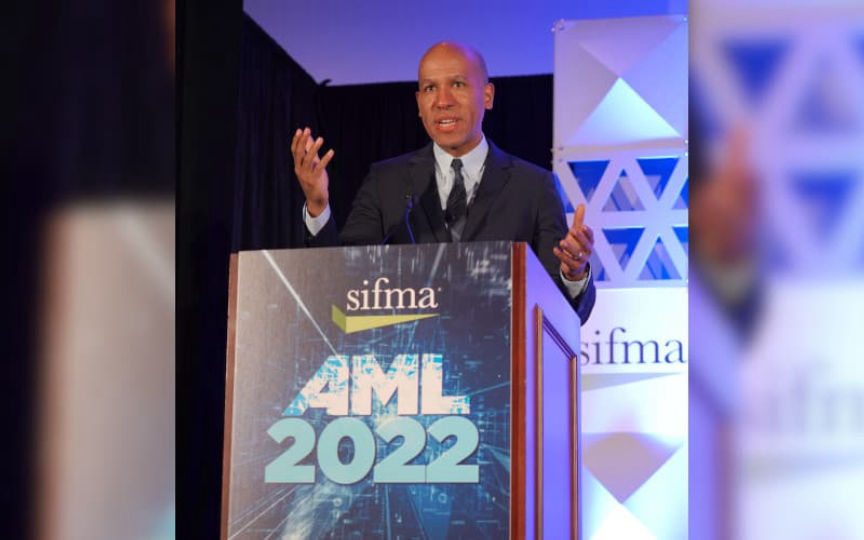
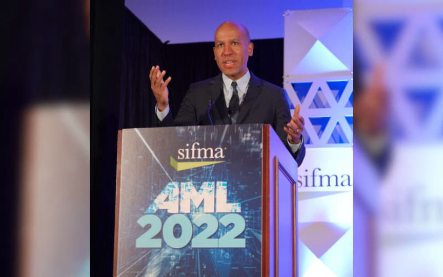

Treasury Taking Comments on Risks Posed by Crypto
~7 min read | Published on 2022-09-22, tagged Cryptocurrency using 1686 words.
The United States Treasury is seeking public comment on the “national security risks posed by digital assets.”
The United States Department of the Treasury filed a Request for Comment to purportedly seek feedback from the nation about the “national security risks posed by digital assets.”
“WASHINGTON — The U.S. Department of the Treasury today filed a Request for Comment (RFC) to seek feedback from the American people on the illicit finance and national security risks posed by digital assets. The filing is pursuant to President Joe Biden’s Executive Order, “Ensuring Responsible Development of Digital Assets” and the subsequent Illicit Finance Action Plan released by the Treasury Department last week.”
“Without appropriate controls and enforcement of existing laws, digital assets can pose a significant risk to national security by facilitating illicit finance, such as money laundering, cybercrime and terrorist actions,” U.S. Under Secretary of the Treasury for Terrorism and Financial Intelligence Brian E. Nelson said. “As we work to implement the Illicit Finance Action Plan, hold bad actors accountable and identify potential gaps in existing enforcement, we look forward to receiving the public’s input on this urgent work.”

Relevant RFC text:
Background
Executive Order 14067 of March 9, 2022, “Ensuring Responsible Development of Digital Assets” (hereafter “Executive Order”) (87 FR 14143; March 14, 2022), outlines principal U.S. policy objectives with respect to digital assets. These principal policy objectives are:
Protection of consumers, investors, and businesses in the United States. Protection of United States and global financial stability and the mitigation of systemic risk. Mitigation of illicit finance and national security risks posed by misuse of digital assets. Reinforcement of U.S. leadership in the global financial system and in technological and economic competitiveness, including through the responsible development of payment innovations and digital assets. Start Printed Page 57557 Promotion of access to safe and affordable financial services. Support of technological advances that promote responsible development and use of digital assets. Section 7(a) provides that digital assets have facilitated sophisticated cybercrime-related financial networks and activity, including through ransomware activity. The growing use of digital assets in financial activity heightens risks of crimes such as money laundering, terrorist and proliferation financing, fraud and theft schemes, and corruption. These illicit activities highlight the need for ongoing scrutiny of the use of digital assets, the extent to which technological innovation may impact such activities, and exploration of opportunities to mitigate these risks through regulation, supervision, public-private engagement, oversight, and law enforcement.
Section 7(c) directs the Secretary of the Treasury, in consultation with the Secretary of State, the Attorney General, the Secretary of Commerce, the Secretary of Homeland Security, the Director of the Office of Management and Budget, the Director of National Intelligence, and the heads of other relevant agencies shall develop a coordinated action plan based on the Strategy’s conclusions for mitigating the digital-asset-related illicit finance and national security risks addressed in the updated strategy. The action plan shall address the role of law enforcement and measures to increase financial services providers’ compliance with anti-money laundering and countering the financing of terrorism (AML/CFT) obligations related to digital asset activities.
II. Objective
In September 2022, the Treasury Department submitted this action plan to the White House and publicly released the report. The digital asset ecosystem is rapidly evolving, and the Department of the Treasury is committed to continuing to monitor emerging risks in partnership with other U.S. government agencies, foreign governments, and the private sector, which will inform other potential actions to mitigate these risks. Through this request for comment (RFC), Treasury is requesting input from the public to understand the public’s view on the emerging risks as well as what actions the U.S. government and Treasury Department should take to mitigate the risks. Through this RFC, Treasury also seeks to further understand how public-private collaboration may improve efforts to address the risks.
III. Request for Comments
Treasury welcomes input on any matter that commenters believe is relevant to Treasury’s ongoing efforts to assess the illicit finance risks associated with digital assets as well as the ongoing efforts to mitigate the risks. Commenters are encouraged to address any or all of the following questions, or to provide any other comments relevant to the development of the report. When responding to one or more of the questions below, please note in your response the number(s) of the questions to which you are responding. In all cases, to the extent possible, please cite any public data related to or that support your responses. If data are available, but non-public, describe such data to the extent permissible.A. Illicit Finance Risks
Has Treasury comprehensively defined the illicit financing risks associated with digital assets? Please list any key illicit financing risks that we have not raised in this Action Plan or the National Risk Assessment. How might future technological innovations in digital assets present new illicit finance risks or mitigate illicit finance risks? What are the illicit finance risks related to non-fungible tokens? What are the illicit finance risks related to decentralized finance (DeFi) and peer-to-peer payment technologies?[/list]B. AML/CFT Regulation and Supervision
What additional steps should the United States government take to more effectively deter, detect, and disrupt the misuse of digital assets and digital asset service providers by criminals? Are there specific areas related to AML/CFT and sanctions obligations with respect to digital assets that require additional clarity? What existing regulatory obligations in your view are not or no longer fit for purpose as it relates to digital assets? If you believe some are not fit for purpose, what alternative obligations should be imposed to effectively address illicit finance risks related to digital assets and vulnerabilities? What regulatory changes would help better mitigate illicit financing risks associated with digital assets?*How can the U.S. government improve state-state and state-federal coordination for AML/CFT regulation and supervision for digital assets? What additional steps should the U.S. government consider to combat ransomware? What additional steps should the U.S. government consider to address the illicit finance risks related to mixers and other anonymity-enhancing technologies? What steps should the U.S. government take to effectively mitigate the illicit finance risks related to DeFi?[/list]C. Global Implementation of AML/CFT Standards
How can Treasury most effectively support consistent implementation of global AML/CFT standards across jurisdictions for digital assets, including virtual assets and virtual asset service providers (VASP)? Are there specific countries or jurisdictions where the U.S. government should focus its efforts, through bilateral outreach and technical assistance, to strengthen foreign AML/CFT regimes related to virtual asset service providers?[/list]D. Private Sector Engagement and AML/CFT Solutions How can Treasury maximize public-private and private-private information sharing on illicit finance and digital assets? How can the U.S. Department of the Treasury, in concert with other government agencies, improve guidance and public-private communication on AML/CFT and sanctions obligations with regard to digital assets? How can Treasury encourage the use of collaborative analytics to address illicit financing risks associated with digital assets while also respecting due process and privacy? What technological solutions designed to improve AML/CFT and sanctions compliance are being used by the private sector for digital assets? Can these technologies be employed to better identify and disrupt illicit finance associated with digital assets and if so, how? Are there additional steps the U.S. Government can take to promote the development and implementation of innovative technologies designed to improve AML/CFT compliance with respect to digital assets? How can law enforcement and supervisory efforts related to countering illicit finance in digital assets better integrate private sector resources? How can Treasury maximize the development and use of emerging technologies like blockchain analytics, travel rule solutions, or blockchain native AML/CFT solutions, to strengthen AML/CFT compliance related to digital assets? How can financial institutions offering digital assets better integrate Start Printed Page 57558 controls focused on fiat currency and digital asset transaction monitoring and customer identification information to more effectively identify, mitigate, and report illicit finance risks?[/list]E. Central Bank Digital Currencies (CBDC)
How can Treasury most effectively support the incorporation of AML/CFT controls into a potential U.S. CBDC design?
IV. Notes
The term “digital asset” refers to all CBDCs, regardless of the technology used, and to other representations of value, financial assets and instruments, or claims that are used to make payments or investments, or to transmit or exchange funds or the equivalent thereof, that are issued or represented in digital form through the use of distributed ledger technology. Some examples of digital assets include cryptocurrencies, stablecoins, and CBDCs. Regardless of the label used, a digital asset may be, among other things, a security, a commodity, a derivative, or other financial product. Digital assets may be exchanged across digital asset trading platforms, including centralized and decentralized finance platforms, or through peer-to-peer technologies.
The term “virtual asset” refers to a subset of digital assets that does not include CBDCs or representations of other financial assets, such as digitized representations of existing securities or deposits.
The term “virtual asset service provider” as defined by FATF, means any natural or legal person who is not covered elsewhere under the FATF Recommendations, and as a business conducts one or more of the following activities or operations for or on behalf of another natural or legal person:
i. exchange between virtual assets and fiat currencies;<br>ii. exchange between one or more forms of virtual assets;<br>iii. transfer of virtual assets;<br>iv. safekeeping and/or administration of virtual assets or instruments enabling control over virtual assets; and<br>v. participation in and provision of financial services related to an issuer’s offer and/or sale of a virtual asset.
Scott Rembrandt,
Deputy Assistant Secretary, Office of Terrorist Financing and Financial Crimes, U.S. Department of the Treasury.
Ensuring Responsible Development of Digital Assets; Request for Comment | www.federalregister.gov, archive.is, archive.org
Also in PDF: pdf
Western governments have nearly dropped the pretext of decision-making with input from the public. Every decision is presented as if you are a juvenile being told that something outside your control is happening. I do not even see why the Treasury is bothering to take comments from the public. Also sounds like blockchain analytics companies are going to be an official branch of law enforcement (they are already an unofficial branch).
[img=]coincidentally[/img]
The United States Department of the Treasury filed a Request for Comment to purportedly seek feedback from the nation about the “national security risks posed by digital assets.”
“WASHINGTON — The U.S. Department of the Treasury today filed a Request for Comment (RFC) to seek feedback from the American people on the illicit finance and national security risks posed by digital assets. The filing is pursuant to President Joe Biden’s Executive Order, “Ensuring Responsible Development of Digital Assets” and the subsequent Illicit Finance Action Plan released by the Treasury Department last week.”
“Without appropriate controls and enforcement of existing laws, digital assets can pose a significant risk to national security by facilitating illicit finance, such as money laundering, cybercrime and terrorist actions,” U.S. Under Secretary of the Treasury for Terrorism and Financial Intelligence Brian E. Nelson said. “As we work to implement the Illicit Finance Action Plan, hold bad actors accountable and identify potential gaps in existing enforcement, we look forward to receiving the public’s input on this urgent work.”

U.S. Under Secretary of the Treasury for Terrorism and Financial Intelligence Brian E. Nelson at an AML conference.
Relevant RFC text:
Background
Executive Order 14067 of March 9, 2022, “Ensuring Responsible Development of Digital Assets” (hereafter “Executive Order”) (87 FR 14143; March 14, 2022), outlines principal U.S. policy objectives with respect to digital assets. These principal policy objectives are:
Section 7(c) directs the Secretary of the Treasury, in consultation with the Secretary of State, the Attorney General, the Secretary of Commerce, the Secretary of Homeland Security, the Director of the Office of Management and Budget, the Director of National Intelligence, and the heads of other relevant agencies shall develop a coordinated action plan based on the Strategy’s conclusions for mitigating the digital-asset-related illicit finance and national security risks addressed in the updated strategy. The action plan shall address the role of law enforcement and measures to increase financial services providers’ compliance with anti-money laundering and countering the financing of terrorism (AML/CFT) obligations related to digital asset activities.
II. Objective
In September 2022, the Treasury Department submitted this action plan to the White House and publicly released the report. The digital asset ecosystem is rapidly evolving, and the Department of the Treasury is committed to continuing to monitor emerging risks in partnership with other U.S. government agencies, foreign governments, and the private sector, which will inform other potential actions to mitigate these risks. Through this request for comment (RFC), Treasury is requesting input from the public to understand the public’s view on the emerging risks as well as what actions the U.S. government and Treasury Department should take to mitigate the risks. Through this RFC, Treasury also seeks to further understand how public-private collaboration may improve efforts to address the risks.
III. Request for Comments
Treasury welcomes input on any matter that commenters believe is relevant to Treasury’s ongoing efforts to assess the illicit finance risks associated with digital assets as well as the ongoing efforts to mitigate the risks. Commenters are encouraged to address any or all of the following questions, or to provide any other comments relevant to the development of the report. When responding to one or more of the questions below, please note in your response the number(s) of the questions to which you are responding. In all cases, to the extent possible, please cite any public data related to or that support your responses. If data are available, but non-public, describe such data to the extent permissible.A. Illicit Finance Risks
IV. Notes
The term “digital asset” refers to all CBDCs, regardless of the technology used, and to other representations of value, financial assets and instruments, or claims that are used to make payments or investments, or to transmit or exchange funds or the equivalent thereof, that are issued or represented in digital form through the use of distributed ledger technology. Some examples of digital assets include cryptocurrencies, stablecoins, and CBDCs. Regardless of the label used, a digital asset may be, among other things, a security, a commodity, a derivative, or other financial product. Digital assets may be exchanged across digital asset trading platforms, including centralized and decentralized finance platforms, or through peer-to-peer technologies.
The term “virtual asset” refers to a subset of digital assets that does not include CBDCs or representations of other financial assets, such as digitized representations of existing securities or deposits.
The term “virtual asset service provider” as defined by FATF, means any natural or legal person who is not covered elsewhere under the FATF Recommendations, and as a business conducts one or more of the following activities or operations for or on behalf of another natural or legal person:
i. exchange between virtual assets and fiat currencies;<br>ii. exchange between one or more forms of virtual assets;<br>iii. transfer of virtual assets;<br>iv. safekeeping and/or administration of virtual assets or instruments enabling control over virtual assets; and<br>v. participation in and provision of financial services related to an issuer’s offer and/or sale of a virtual asset.
Scott Rembrandt,
Deputy Assistant Secretary, Office of Terrorist Financing and Financial Crimes, U.S. Department of the Treasury.
Ensuring Responsible Development of Digital Assets; Request for Comment | www.federalregister.gov, archive.is, archive.org
Also in PDF: pdf
Western governments have nearly dropped the pretext of decision-making with input from the public. Every decision is presented as if you are a juvenile being told that something outside your control is happening. I do not even see why the Treasury is bothering to take comments from the public. Also sounds like blockchain analytics companies are going to be an official branch of law enforcement (they are already an unofficial branch).
[img=]coincidentally[/img]